1 Nov 2026branch dev @ ccb6208Quest 3S over USB · Quest Browser · Vite :5173
Review of the web app, the 2D reels player, the immersive preview and the WebXR session on a real Quest 3S. Four review passes used the immersive-designer, design-critique, accessibility-review, ux-copy and design-system skills. Every finding below was checked against the code at the line given.
Checked against
hz-immersive-designer (Meta Horizon OS comfort, legibility and spatial layout rules) for the VR session.
design:design-critique for hierarchy, consistency and usability of every page.
VR on Quest 3SDriven live in Quest Browser over USB with CDP; screenshots are the headset's own stereo capture.
Comfort and legibility are the main problems. The screen is head-locked by default in VR (webxr_vr.js:7703 sets lockToViewer = !isPackExperience()), UI panels ignore depth, and the dock text is far below the legibility floor.
Default VR view. The dock covers the lower third of the reel and its labels (LIKE, SAVE, SHARE, REPORT) are about 0.5° tall.
HighVR text and targets are below legibility limits
What
Dock labels render at 0.4–0.7° of visual angle; the minimum for comfortable reading is about 1°. The dock sits 3.11 m away, comments at 4.2 m, the guide at 4.0 m. EXIT and COMMENTS targets are 32px, about 1.9°.
Evidence
Dock action-tile captions are bold 10px (vr_ui_canvas.js, renderControlsCanvas), side pills and COLLECT 12px, scrub times 12px. Nav tab labels are bold 18px (vr_shell_canvas.js). The dock canvas gives 0.073° per pixel and the nav canvas 0.038° per pixel, so 10px is 0.73° and 18px is 0.68°.
Fix
Size UI in degrees, not canvas pixels. Body text ≥ 1.2°, labels ≥ 1°, targets ≥ 2.5° with 0.5° gaps. Bring panels to 1.0–1.5 m, or scale the canvas so the same font reads larger. Drop ALL-CAPS mono for dock labels.
Fix 8 · Attempted fix · text size, checked on the Quest 3S
Changed: dock action-tile captions 10 → 13px, side pill labels and the scrub times 12 → 13px and 14px (vr_ui_canvas.js), nav tab labels 18 → 26px (vr_shell_canvas.js). At the measured degrees per pixel that is about 0.95° for captions, 1.0° for scrub times and 0.98° for nav labels, up from 0.68–0.73°. The longest labels (SHARE, MESSAGES, CREDITS) still fit their tiles in the headset capture.
Not done: body text is still under the 1.2° target, and the targets and the panel distances in this finding are unchanged. The angles are computed from the measured pixel-to-degree ratio, not re-measured. The scrub times are not in the after capture, because that reel has no scrub bar, so their fit is unchecked.
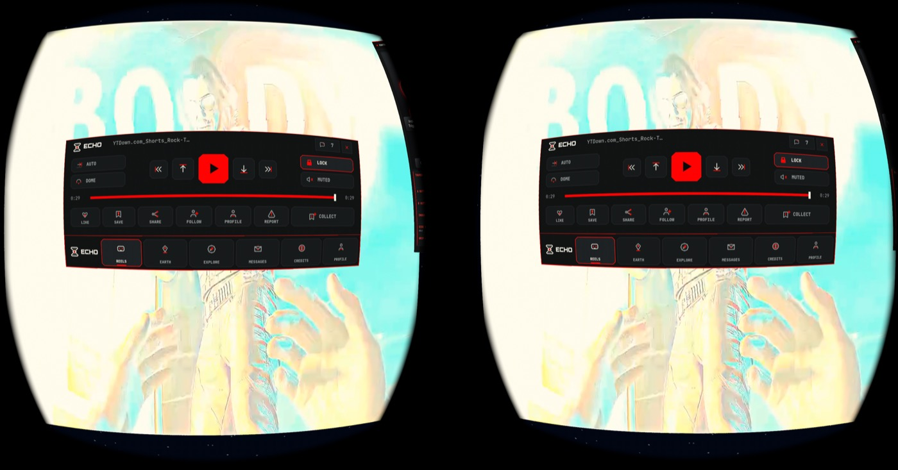
Before: tile captions at 10px, nav labels at 18px.
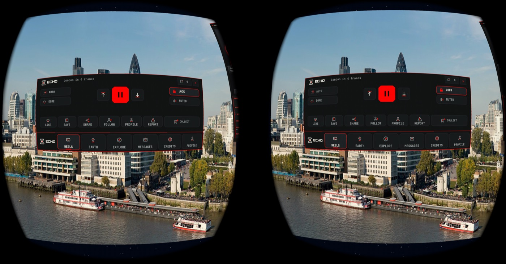
After: tile captions at 13px, nav labels at 26px.
HighUI panels draw through the video dome
What
UI meshes use depthTest: false, so they draw on top of everything regardless of distance. In stereo the eyes read the panel as farther than the dome but see it in front, which is a depth conflict and causes eye strain.
Evidence
webxr_vr.js:5063, 5092, 5117, 5145, 5180, 5227.
Fix
Place panels nearer than the dome surface and turn depth testing back on, or render UI on a quad layer (XRQuadLayer) which the compositor resolves correctly and also renders text sharper.
Turning depth testing back on changes how every panel is seen in stereo. The head-locked default screen also puts the dome between the viewer and every room-fixed panel, so with depth testing on, the dome would hide the panels. A safe change has to land together with the locking change under "Head-locked screen spans about 89°" and be judged on the headset.
Proposed change:
In ui/assets/webxr_vr.js, set depthTest: true on the materials of the dock (:5127), comments panel (:5152) and guide (:5180).
Keep the overlay (:5098) as is: it lies on the screen surface itself.
Place each panel at least 0.1 m in front of the dome surface along the view ray. At the default 4 m dome that means about 0.3–0.7 m nearer than the screen centre plane, because the dome curves toward the viewer at its edges.
Alternatively, move the dock and panels to XRQuadLayers, which the compositor depth-sorts and draws sharper.
Not verified.
HighHead-locked screen spans about 89°
What
The reel follows the head by default and fills about 89° horizontally. Guidance for content the eyes must scan is about 50–60°. Head-locked content that large causes neck strain and motion discomfort.
Evidence
webxr_vr.js:7703 (session), :9505 (headset preview); :67 default is overridden.
Fix
Default to world-locked with a lazy follow (recentre after the head turns more than ~30° for 1 s). Default screen width to about 55°, with grip + stick to resize.
Fix 30 · Not attempted · changes the default locking and screen size, needs on-headset comfort testing
The default lock and the 4 m screen were confirmed by the owner as legacy behaviour (see the comment above getLockedAnchor). Changing them alters every session, and the comfort result can only be judged on the headset.
Proposed change, all in ui/assets/webxr_vr.js:
Set lockToViewer = false by default in resetXRSessionState (:9613), init (:10497) and the headset preview (:7799, :7873).
Add a lazy follow to applyLockToViewer (:882): re-centre over about 0.5 s once the head yaw has been more than 30° off the screen for 1 s.
Set DEFAULT_SCALE (:74) to about 2 × 2.24 × tan(27.5°) ≈ 2.3 m, so the screen is about 55° wide at the 2.24 m station.
Keep grip + stick resizing.
Once the screen is that size, the dock-below-screen layout lands near −29°. The 20° unlocked-dock cap from fix25 can then be applied without the dock overlapping the dome.
Not verified.
MediumComments open out of view; unlocked dock drops below the floor
What
Comments and profile panels open at ±50–52° yaw, so pressing COMMENTS shows nothing ahead. When unlocked, the dock sits at −44° pitch, near the floor.
Fix
Open side panels within ±25° and pitch the dock no lower than −20°. Animate the panel in from the button so the eye follows.
Top: default head-locked view. Bottom: unlocked, the nav strip drops to −49.5° at the lower edge.
Right after pressing COMMENTS. Only a red panel edge appears at the far right.The comments and guide textures themselves. The guide is the clearest UI in the session; the empty comments state is a large blank area.
Fix 25 · Attempted fix · comments panel only, checked in the immersive preview, not on a headset
Changed (webxr_vr.js, new clampSideOffset used by getCommentsPanelLayout): in locked mode, which is the feed's default, the comments panel swings in from about 52° to 25° left of straight ahead. It stays the same distance from the viewer (about 4.2 m), so its size in view is unchanged. The unit tests for the locked layout were updated to expect 25°. In /reels/immersive-preview, pressing COMMENTS now opens the panel inside the headset-camera view.
Not done:
Unlocked dock pitch. At the default 4 m dome screen, 2.24 m away, a dock 20° below the eye line sits inside the screen's area: about 0.8 m below centre, while the screen's bottom edge is 2 m below centre. The dock would then sit behind the curved surface but still draw in front of it, which is the depth conflict in "UI panels draw through the video dome". The alternative is to pull it about 0.7 m toward the viewer, which needs comfort testing on the headset. The 20° cap should follow the smaller default screen proposed under "Head-locked screen spans about 89°".
Panel overlaps the dock. At 25°, the bottom of the panel covers the dock's top-left corner: the title, AUTO, DOME and the elapsed time. The panel draws on top and takes those clicks until it is closed.
Right panel unchanged. The right-hand panel is the controller guide, which shows every time the dock shows. It is left at about 50°, because at 25° it would cover LOCK and MUTE on every pause.
No slide-in animation. The panel does not animate in from the button.
Unlocked panels unchanged. In unlocked mode the side panels stay relative to the screen, as before.
Not verified on a Quest. The angles come from the layout math and the desktop preview.
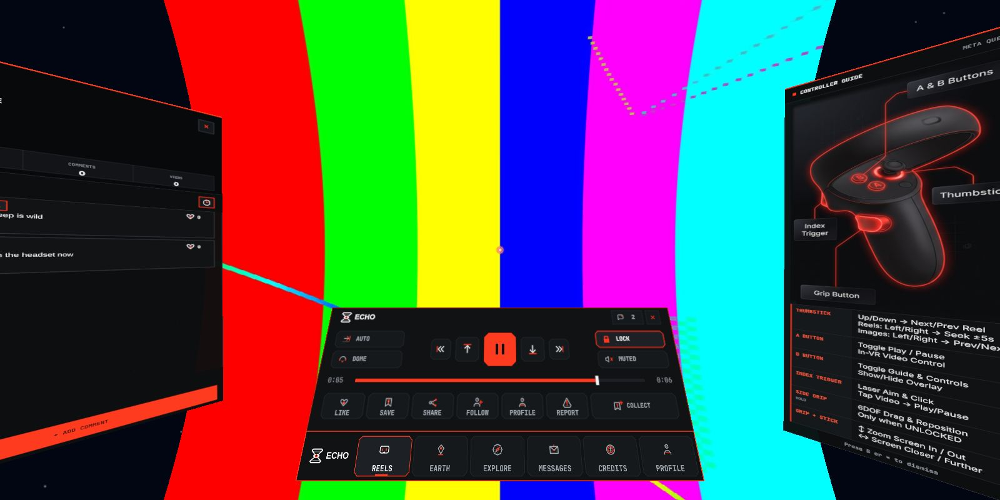
Before (preview harness on the HEAD engine): the comments panel opens at about 52°, at the edge of a 113° view.
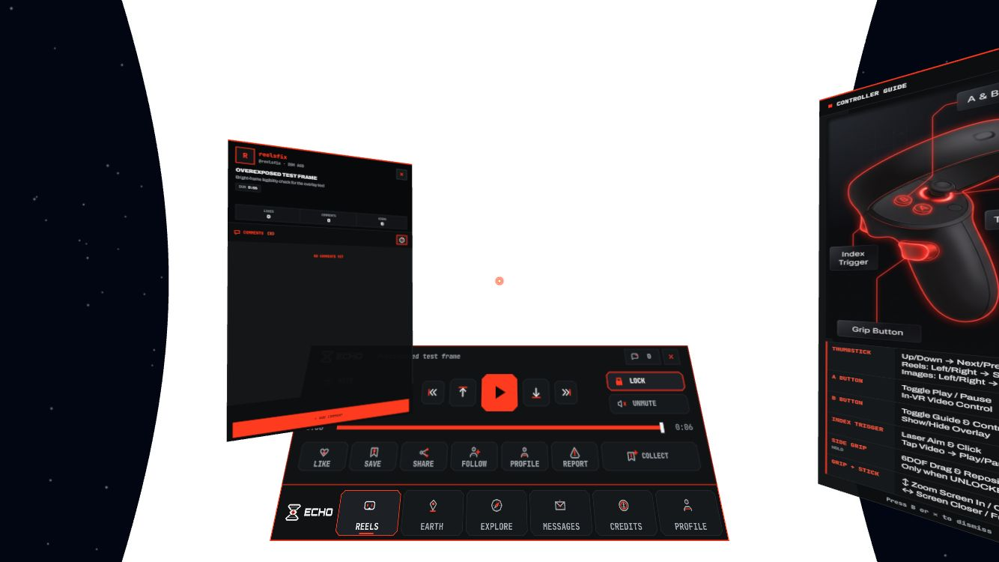
After (/reels/immersive-preview, 75° vertical FOV): the panel opens at 25° and is in view. Note the overlap with the dock's left column.
MediumDock auto-hide is inverted
What
executeControlButton calls resetAutoHideTimer() before acting, so pressing a button that should hide the dock restarts its timer instead. The dock lingers over the video after use.
Fix
Reset the timer only on pointer hover or input, and hide immediately after actions that change the reel.
Fix 24 · Attempted fix · checked in the desktop preview engine and unit tests, not on a headset
Changed (webxr_vr.js): executeControlButton no longer restarts the auto-hide timer before acting. PREV and NEXT now hide the dock as soon as they run. Every other press restarts the 5 s timer after its action, so a PLAY press now sees the new paused state (paused reels keep the dock up, as before). When the timer fires, a pointer resting on a dock button or on the nav strip keeps the dock up for another 5 s. EXIT does not restart the timer. This fix also covers the VR half of "Enter VR is hidden two taps deep": in applyShellVisibility the shell nav strip now shows and hides with the dock, and stays up while the shell is open. A new test, "fix24: NEXT hides the dock at once…", checks that LIKE queues the 5 s timer and NEXT hides the dock. To expose the button handler to the test, executeControlButton was added to __test.
Checked: in a preview harness that loads the real ui/assets scripts, hiding the controls now hides the nav strip too. Before, the strip stayed over the video.
Not done: Not verified on a Quest. The hover keep-alive and the hide after NEXT were checked by reading the code and by the unit test, not with a controller. XR sessions still start with the dock and nav hidden, except on the first entry (fix27), so the nav strip now appears only after B, a tap on empty space, or a pause. Before, it was always visible. The 2D "Enter VR" button in the main rail is outside the VR code and was not touched here.
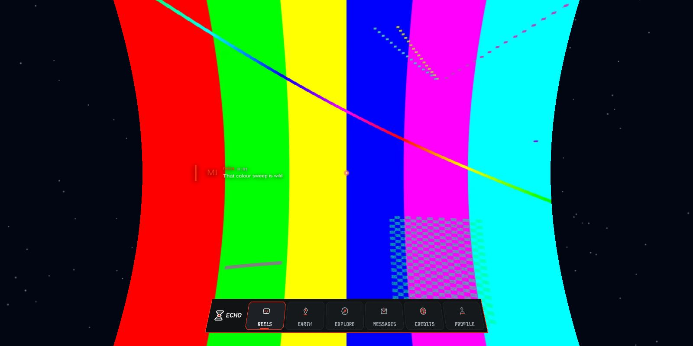
Before: with the dock hidden, the nav strip stays over the video.
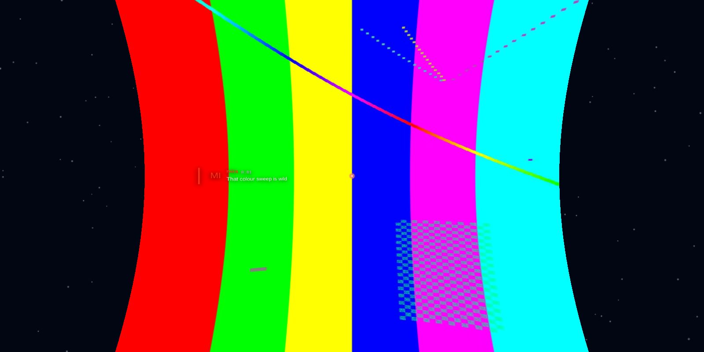
After: the nav strip hides with the dock (desktop preview harness, same engine; not a headset capture).
MediumNo loading or error state in VR
What
When a reel fails, VR keeps showing the previous frame with a 0:00 / 0:00 scrubber and no message. Stall tracking only runs with ?xrdiag=1. The title row shows the raw filename.
Evidence
webxr_vr.js:5488FRESH_VISUAL_MAX_HOLD_MS = 2500; stall code gated behind the diag flag.
Fix
After the 2.5 s hold, dim the frame and show "This reel couldn't load" with Skip and Retry on the dock. Show a spinner during buffering.
Broken source after 4 s: frozen frame, 0:00, raw filename as title.
Fix 26 · Attempted fix · checked in a desktop preview harness and by rendering the overlay canvas, not on a headset
Changed: webxr_vr.js has a new reelLoadState, which runs every frame from the overlay refresh. A video reel whose element has a media error (or NETWORK_NO_SOURCE) turns failed once it has waited FRESH_VISUAL_MAX_HOLD_MS (2.5 s). A reel that is not ready, or that stalls mid-play, shows loading after 0.5 s. Stall tracking (trackStalls) is now bound by this check on every frame; only the diagnostics POST still needs ?xrdiag=1.
vr_ui_canvas.jsrenderOverlayCanvas takes a loadState. When the reel has failed, it dims the whole frame (62% black) and draws "This reel couldn't load" with RETRY and SKIP buttons (220×72 px on the 1024 px overlay, roughly 18°×6° on the default screen). While loading, it draws a spinner and "Loading…" over the held frame. SKIP calls onNext. RETRY calls load() and then play() on the element. Both go through the existing pop-up-comment hit path, now handleOverlayHit.
Checked: in a preview harness running the real engine, pointing the video at a missing file left the old frame for about 2.5 s, then showed the dimmed card below. The hit regions resolve to load:skip and load:retry. A new unit test, "fix26: a reel with a media error shows SKIP / RETRY after the hold", covers the timing.
Not done: Not verified on a Quest. RETRY was checked by reading the code only. The overlay follows the existing overlay rules: it is hidden while the comments panel is open and when ?overlay=0 is set. The title row still shows the raw filename when a reel has no title.
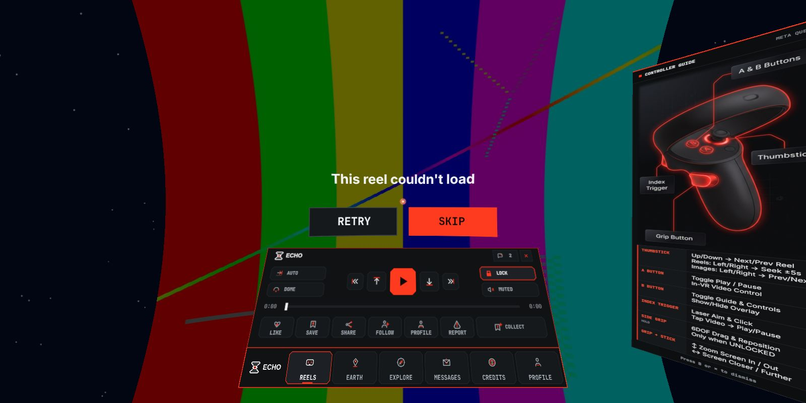
After: a reel whose file is missing, about 3.5 s after the switch (desktop preview harness, same engine).
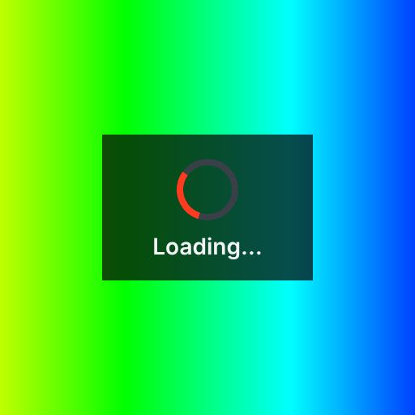
After: the loading state, rendered from renderOverlayCanvas to an image.
MediumInput and onboarding gaps
What
Hand tracking is requested only with ?xrfull=1; the default session asks for local-floor and local only (webxr_vr.js:9578).
There is no in-VR onboarding; the controller guide only appears on B.
Video texture upload is capped at 30 fps (VR_VIDEO_UPLOAD_MIN_MS = 33, :506), which judders against a 72–90 Hz display.
Fix
Request hand-tracking as an optional feature with pinch to select. Show the guide once on first entry. Upload a frame on every new video frame (requestVideoFrameCallback) instead of a fixed cap.
Fix 27 · Attempted fix · unit tests only, not on a headset
Hand tracking. The default (minimal) session now asks for 'hand-tracking' as an optional feature (webxr_vr.js, enterVR). The laser and select path already use each input source's target ray and the select events, so a pinch should select the way a trigger does. The two session-option tests now expect hand-tracking,local,local-floor. This deliberately changes an asserted value.
Guide on first entry. The first XR session on a browser now shows the dock and the controller guide, with no auto-hide timer, until the viewer's first input. A localStorage flag, echo_vr_guide_seen_v1, records that this has happened; the step is skipped when ?guide=0 is set or storage is unavailable. A new test, "fix27: the first VR entry shows the dock and guide once", covers it.
Video upload. No change was needed. Since v8.24 the default path is the direct THREE.VideoTexture, and three r186 drives it with requestVideoFrameCallback, so frames upload as they decode. The 33 ms cap (VR_VIDEO_UPLOAD_MIN_MS) applies only to the ?vrtex=canvas fallback. There, setupVideoFrameTracking already lets each rVFC frame bypass the cap, and the cap is kept as the fallback.
Not done: Not verified on a Quest.
Asking for hand tracking changes the session request that the v8.15–v8.17 flash bisection settled on. That bisection pinned the flashes on antialias, not on session features, but this still needs a check on the headset for flashes and for pinch selection.
With hands there is no B button, stick or grip, so hiding the dock, the stick flicks and resizing are controller-only.
The guide still covers controllers only.
The guide sits about 50° to the right (see fix25), so on a 3S its inner edge is near the edge of view.
HighDock and nav are anchored below the floor
What
The screen centre is fixed at 1.52 m, whatever the viewer's height. Measured in local-floor space, the dock sits at y = −0.38 m and the nav strip at −0.88 m, under the floor. For a standing eye that is about 40° and 50° below the horizon. Unlocked, the nav drops to −2.02 m (−49.5°).
Evidence
webxr_vr.js:73DEFAULT_POS.y = 1.52, :78SCREEN_CENTER_Y, :892 fallback head height.
Fix
Anchor from the viewer's head height at session start. Dock 10–20° below eye line at 1.2–1.5 m, clamped to at least floor + 0.6 m.
Fix 7 · Attempted fix · measured on the Quest 3S
Changed (webxr_vr.js, getLockedAnchor and computeDockPose): the locked anchor now takes the viewer's eye height from the first frame of each XR session instead of the fixed 1.52 m (reset in resetXRSessionState; a manually tuned screen height still wins). The dock drop below the anchor is capped at 25° below the eye line at the dock's distance (it was half the 4 m screen, about 33°), and the dock stays at least 0.6 m above the floor and never above eye level − 0.3 m. The nav strip hangs from the dock, so it follows.
Measured: headset on a desk, eye at 0.50 m. The nav strip moved from −33° (centre y −0.88 m, out of view) to −6° (y 0.25 m) and now shows in the lower view. Not verified: seated (about 1.2 m) and standing (about 1.6 m) heads, which need a person wearing the headset; at those heights the 25° cap should put the dock about 1.0 m below the eye, floor-clamped. The side panels now share the same eye-height anchor and were not looked at.
Follow-up: this change broke two layout tests in webxr-earth.test.js. One expected the old dock height and now expects the 0.6 m floor clamp. The other is the nav-under-dock check: the strip is flush with the dock's lower edge, and the strict comparison failed on a 1e-16 rounding error, so it now allows 1e-9.
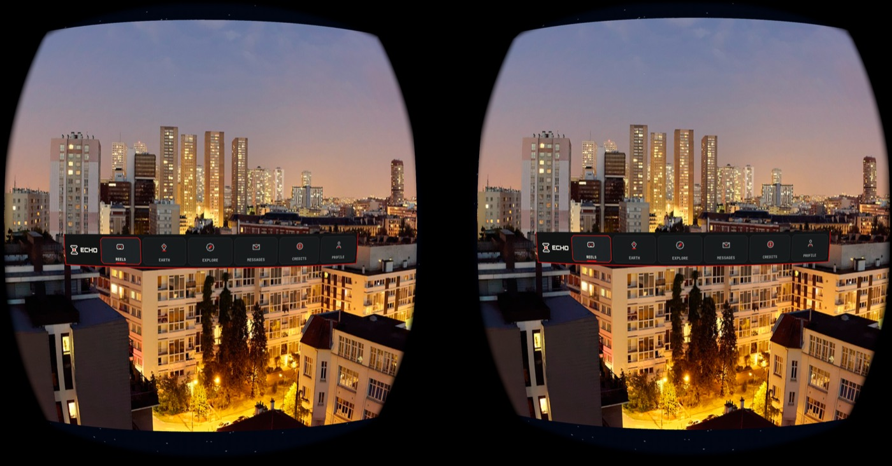
After, on the headset: the nav strip is in the lower half of the view instead of below it.
MediumPhantom laser with no controllers
What
With no input sources, the laser and reticle still draw from the world origin, because the ray code falls back to the first controller with an identity pose.
Evidence
webxr_vr.js:7154vrControllers[0] fallback.
Fix
Hide the laser and reticle when session.inputSources is empty or the controller has no pose.
Attempted fix · verified on the Quest 3S
Changed (updateControllerLasers in webxr_vr.js): when the XR session reports no input sources, the laser and reticle are hidden and the frame returns before the identity-pose fallback runs. They show again on the first frame that has an input source. The 481 unit tests pass (none cover this file).
Verified: in a live VR session with the headset on a desk and no controllers, the scene dump shows the laser line and reticle mesh both visible: false. Not verified: that they reappear when a controller wakes mid-session; there is no screenshot because the fixed state is the absence of the laser.
MediumEnter VR is hidden two taps deep
What
On the 2D player the VR button is icon-only, inside the collapsed More menu. The pose notice shows only once (echo_vr_pose_notice_v1). The shell nav also stays over the video after the dock auto-hides.
Fix
On Quest, put a labelled "Enter VR" button in the main rail. Hide the nav strip together with the dock.
Fix 13 · Attempted fix · verified locally (Playwright with navigator.xr.isSessionSupported('immersive-vr') stubbed to true, /reels at 1024×768 and 375×812)
ui/assets/reels.html: when the browser reports immersive-vr support, as on Quest, the VR button leaves the More menu. It becomes a labelled "ENTER VR" pill above the main rail: 115×44 at 1024px, 134×53 at 375px. It is the second Tab stop after the player frame, where before it could not be reached without opening More. It keeps its click handler and its aria-label. Browsers without support are unchanged; on localhost the button still shows only in More as a dev affordance.
Not verified: on a real Quest headset; only the stubbed WebXR API was tested. Not done: hiding the VR nav strip together with the dock. That is in ui/assets/webxr_vr.js, which another agent owns. The once-only pose notice is unchanged. Since done: the nav strip hides with the dock in fix 24.
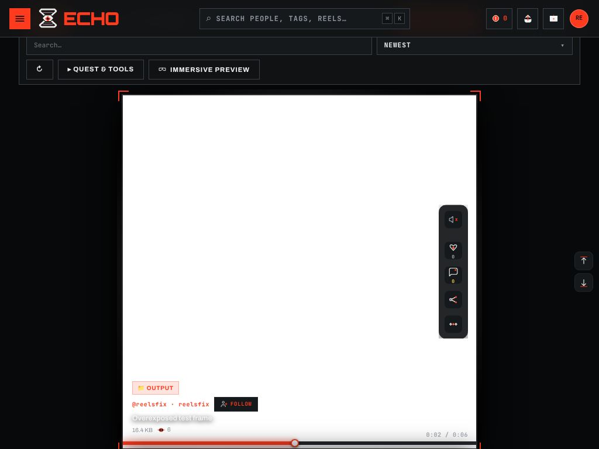
Before: no VR button in the main rail.
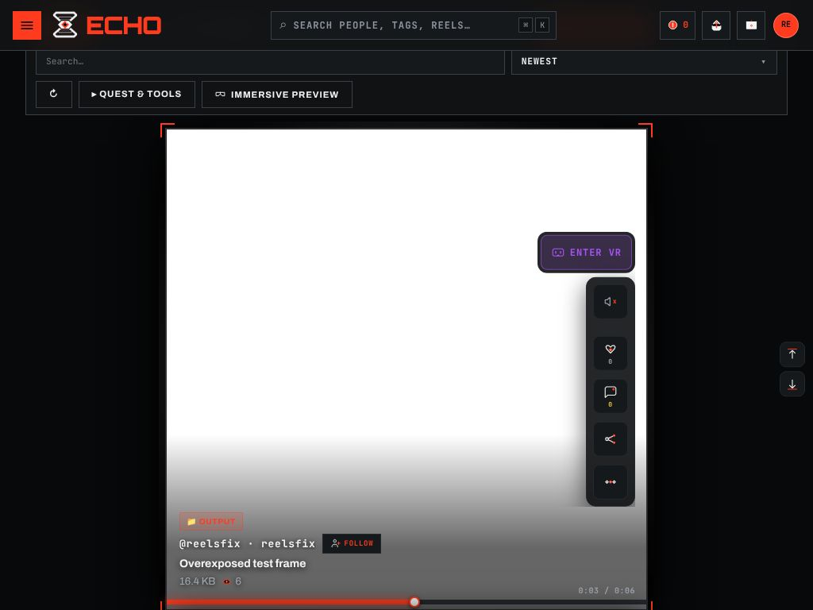
After: 1024px. A labelled Enter VR button sits above the rail.
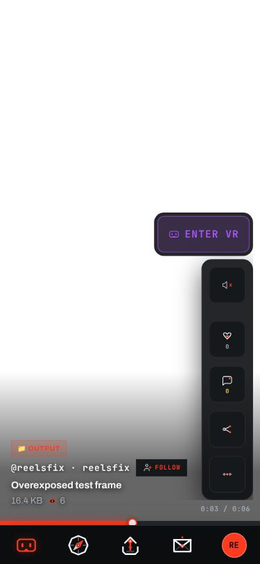
After: 375px.
LowSmaller VR issues
What
PROFILE and the ECHO logo appear in both dock and nav.
Mute button shows its state ("MUTED") instead of the action.
"+ ADD COMMENT" shows while signed out.
The guide says "META QUEST 3" on a 3S and covers controllers only.
Next inside an image carousel steps through images, not reels, with no hint.
Performance and memory on device (Quest 3S, 90 Hz, framebuffer scale 1.5, foveation 0)
Measure
Result
Read
Frame time at rest
11.12 ms median
On budget (11.1 ms)
10 rapid reel switches, 677 frames
p95 12.86 · p99 15.83 · max 36.4 ms; 10% over 12.5 ms
Dropped frames line up with switches. Try scale 1.0–1.2 or foveation 1.
4 enter/exit cycles
GPU graphics back to 780–800 MB after each exit; JS heap flat at 28 MB
No leak
Fix 28 · Attempted fix · checked by rendering the VR canvases to images, not on a headset
Changed:
The dock's audio pill now names the action, MUTE or UNMUTE, instead of the state (MUTED / AUDIO). The speaker icon still shows the current state (vr_ui_canvas.js).
When getCurrentUser() returns no user, the comments panel footer reads SIGN IN TO COMMENT. Pressing it calls the host's onOpenAccount, which shows the existing "SIGN IN ON 2D" handoff in VR. When signed in, it still opens the keyboard (webxr_vr.js, executeCommentAction('add')).
The guide header reads META QUEST.
No tests asserted these strings.
Not done: Not verified on a Quest. Not changed:
PROFILE and the ECHO logo in both the dock and the nav.
The guide covering controllers only.
Next inside an image carousel stepping through images, with no hint.
Before: MUTED, + ADD COMMENT (signed out), META QUEST 3.
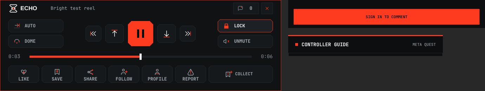
After: UNMUTE, SIGN IN TO COMMENT, META QUEST (canvases rendered to an image).
2D player and immersive previewui/assets/reels.html, ReelsPlayer.jsx, /reels/immersive-preview
HighMESSAGE launcher covers the comment Send button
What
The floating MESSAGE button sits over the comment composer's Send button on /reels. The same launcher covers FULLSCREEN, SAVE PACK, footer links and SEND REQUEST on other pages.
Fix
Hide the launcher on pages with a bottom-right primary action, or dock it in the header. If it stays floating, reserve its space with bottom padding on the page.
/reels at 1280px. MESSAGE sits on top of the Send button.
Fix 1 · Attempted fix · verified locally on /explore and /reels
The launcher no longer renders on /reels, where the player already has its own bottom-right controls; the header MESSAGES button still opens messaging. On every other page the shell now reserves 64px at the bottom (body:has(.sx-message-launcher) .sx-shell), so footer links and page actions scroll clear of the button. Checked with a signed-in user: no element overlaps the launcher at the end of /explore.
After: /reels. Send is clear.After: end of /explore. Footer clears MESSAGE.
HighOverlay text on video has no scrim
What
Creator name and caption sit straight on the video. On bright frames they become unreadable; .meta-creator is also 10px.
Evidence
reels.html:738 (.reels-meta).
Fix
Add a bottom gradient scrim (black 0→60%) under the meta block and raise the text to at least 13px.
Fix 9 · Attempted fix · verified locally (Playwright on /reels with white_frame_reel.mp4 at 1024×768 and 375×812)
In ui/assets/reels.html the video now has a bottom scrim (.reels-video-wrap::after): a black gradient from 0 to 60% over the bottom 45% of the frame, at most 220px. It sits under the meta block, the time readout and the rail. The creator name went from 10px accent to 13px white with a text shadow; it turns accent on hover. The title went from 12px to 14px, and the size/views line from 10px --sx-ink-3 to 13px --sx-ink-2. Computed sizes measured in the browser: creator 13px, title 14px.
At 1280×800 and wider (the docked layout, ≥1100×560) the creator and caption are in the side column, not on the video. The scrim is turned off there, so the before/after pair is shot at 1024px, the widest layout where the text sits on the video.
Not done: the 10px folder chip and the docked layout's 0:03 / 0:06 time readout still sit on the bare video. Since done: fix 36.
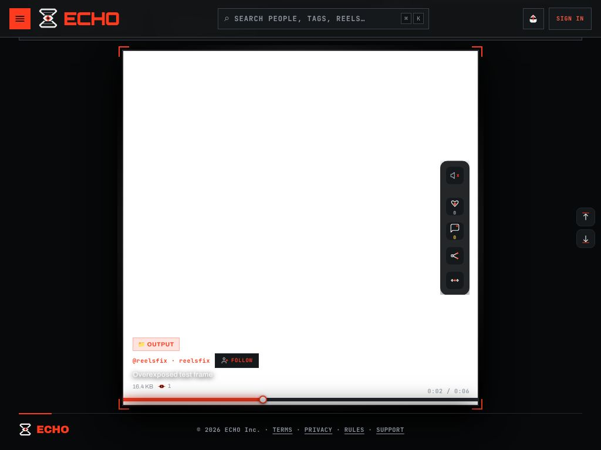
Before: white reel at 1024px. The title and size line disappear into the frame.
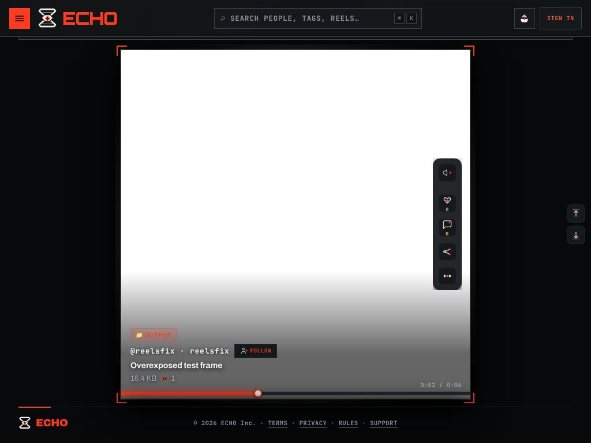
After: 1024px. The scrim is behind the meta block and the text is 13–14px.
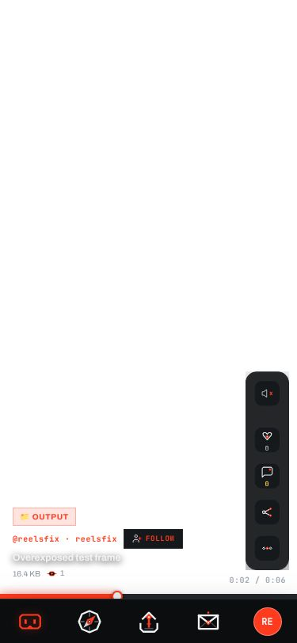
Before: 375px.
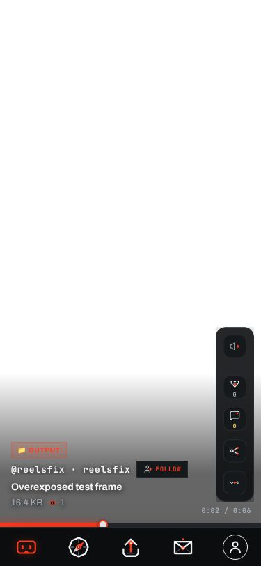
After: 375px.
Fix 36 · Follow-up fix · the leftovers, verified locally (white_frame_reel at 1280px docked and 375px)
The scrim from fix 9 did not reach three pieces of text. All three now use the media chip the Explore tiles already use: a near-black backing (rgba(8, 9, 10, 0.86)) with white text, so they read on any frame without relying on the gradient (reels.html).
Time readout (.reels-time-display): was 10px --sx-ink-2 on bare video in the docked layout, about 2.2:1 on a white frame. Now 12px --sx-ink on its own backing. It has to carry its own backing because the docked layout turns the scrim off.
Folder chip (.meta-folder): was 10px accent on a 14% accent tint. Now 12px white on the chip backing, with the accent kept in its border. I computed that accent text on that backing would be about 4:1 over a white frame, which fails at 12px, so the accent moved to the border.
Size and views line (.meta-sub): fix 9 set it to --sx-ink-2. Over a white frame the scrim leaves a mid-grey, which puts that grey at about 2.5:1, so it is now --sx-ink. The title above still leads by weight and size.
Computed styles confirmed in the browser: all three at 12–13px rgb(242, 243, 245). Contrast figures are calculated from the colours, not measured by a tool.
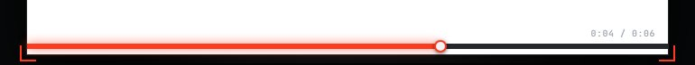
Before, 1280px: the time readout fades into a white frame.
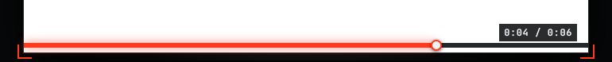
After, 1280px.
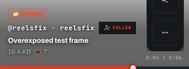
Before, 375px.
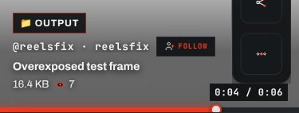
After, 375px.
MediumWrong error message for a missing file
What
Any MEDIA_ERR_SRC_NOT_SUPPORTED shows the HEVC codec message, including a plain 404. The overlay has no role="alert" and its Skip button is 26px.
HEAD-check the source on error; say "This reel is no longer available" for 404s. Add role="alert" and a 44px Skip button.
Fix 4 · Attempted fix · verified locally by forcing a 404 on the player video
In reels.html: the overlay now has role="alert"; the heading no longer says "4K VIDEO DECODE ERROR" for every failure; and the message depends on the error code (code 4: "could not be loaded, may have been removed, or the format is not supported"; code 2: connection dropped; anything else: skip to the next). The dev hint about port 8502 is gone. Text grew from 10/12px to 14/16px and the Skip button is 44px tall. Not done: the HEAD request that would tell a 404 from an unsupported format, so code 4 still has to cover both cases in one sentence. Since done: the HEAD check in fix 37.
After: the error state on /reels with a missing video file.
Fix 37 · Follow-up fix · the HEAD check, verified locally (forced a real 404 and a real undecodable file on /reels)
The check: on MEDIA_ERR_SRC_NOT_SUPPORTED (code 4), reels.html now sends a HEAD request for the failed source, with a 2-second timeout, before showing the overlay, so the overlay is announced once, with the real reason. The answer is ignored if the viewer has already moved to another reel.
404 or 410: "REEL NOT AVAILABLE · It may have been removed. Skip to the next reel."
2xx: the file is there, so it is the format. "Your browser can't play this reel's format. Choose PLAYS EVERYWHERE in the format filter, or skip to the next reel."
No answer (offline, blocked by CORS, or timed out): the combined sentence from fix 4.
Tested with /media/missing_reel.mp4 (404) and /media/not_a_video.mp4 (200, random bytes). Both produce error code 4. Before this change both showed the same text, and that text named a filter option, "H.264 4K (Web & VR)", that exists in no filter.
Copy, following the ux-copy skill (what happened, why, what to do; one word for one thing):
The heading now changes with the case, and every message says "reel" instead of "video".
The network message no longer says "try again", because the overlay has no retry button. It now says "reload the page".
The end-of-feed messages, which used the same overlay, now have their own headings, NO MORE REELS and NO REELS YET, instead of an error heading.
One format vocabulary: the same filter had three sets of names. /reels showed "HEVC 4K (Raw Master) / H264 (Browser/VR) / ALL CODECS", tag and location pages "HEVC MASTER / H264 / VR", and Explore (after fix 22) "BEST QUALITY / PLAYS EVERYWHERE". All four now read BEST QUALITY / PLAYS EVERYWHERE / ALL FORMATS from one shared FORMAT_FILTER_LABELS (utils/mediaFormat.js), so they cannot drift apart again. The tag and location group label "SOURCE:" is now "FORMAT:". The /reels pills gained the accessible name "Format" they lacked, matching Explore. The filter values, URLs and API calls are unchanged.
Not-found reel links (from "Dead ends"): /reels?post=<removed id> used to say "NO VIDEOS MATCH CURRENT FILTERS · Try adjusting the folder, codec filter…", which blamed filters the person never touched. It now says "REEL NOT AVAILABLE · This reel may have been removed, or the link may be wrong." with one WATCH OTHER REELS button (ReelsPage.jsx). Clicking it cleared the link and the feed played, checked in the browser.
Not done: the /reels status strip still shows "CODEC: HEVC", and its subtitle still says "H.264 PROXIES".
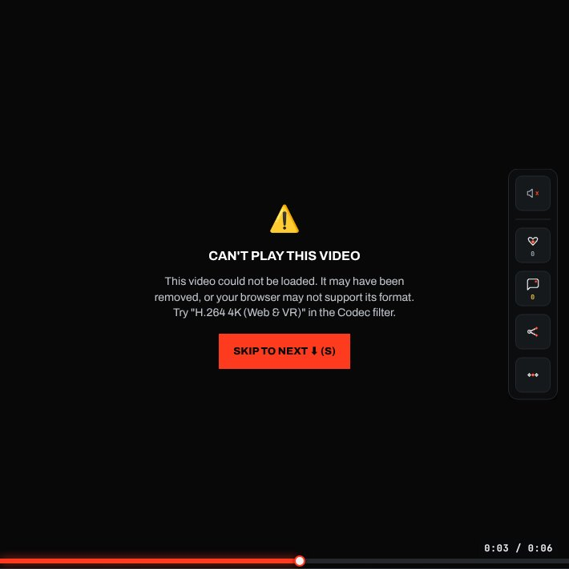
Before: a missing file and an undecodable file got this same text.
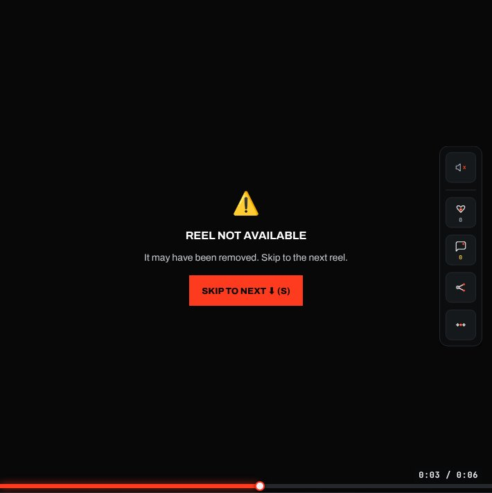
After, 404.
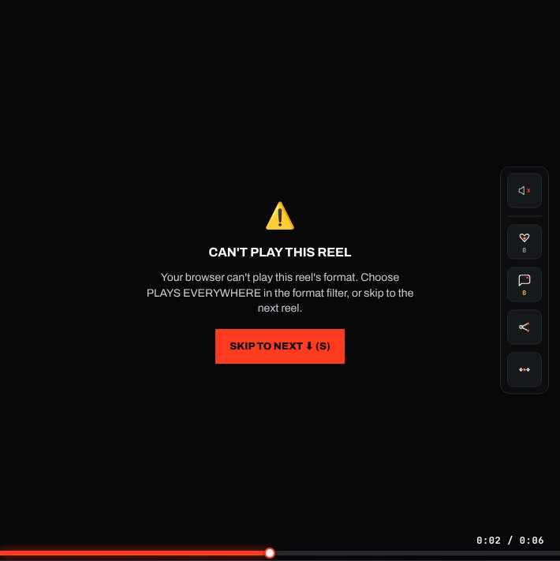
After, file present but undecodable.
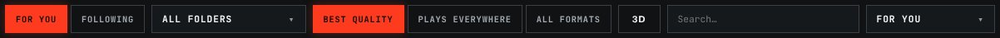
After: /reels format filter, same names as Explore.
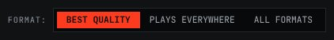
After: tag and location pages.
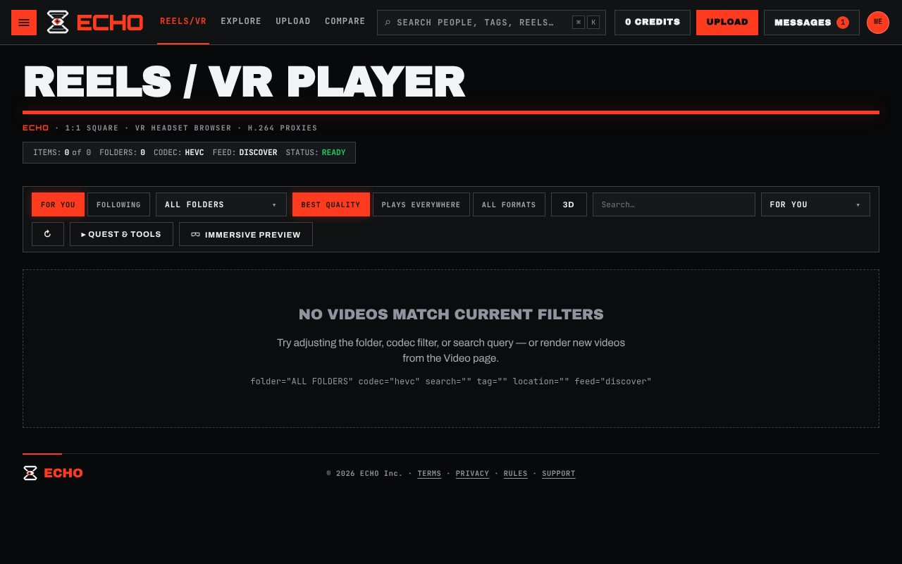
Before: a link to a removed reel blamed the filters. (Taken after the filter rename, so the toolbar already shows the new names.)
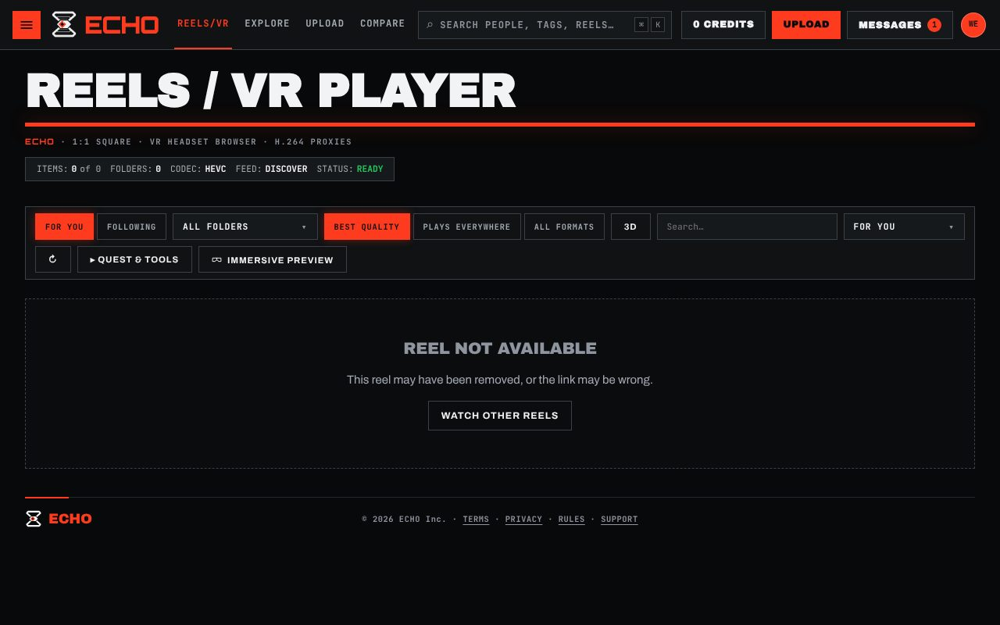
After: says what happened and offers one way on.
MediumFocus is lost and hidden controls stay focusable
What
Closing comments or share drops focus to body. 19 focusable elements sit inside the aria-hidden mount, so screen readers skip them while Tab still lands on them. The 3D canvas has no keyboard path.
Evidence
ReelsPlayer.jsx:260; share close is 19×13px at ReelShareDialog.jsx:159.
Fix
Return focus to the opener on close. Use inert instead of aria-hidden on the hidden mount. Rail buttons from 32–34px up to 44px.
Fix 10 · Attempted fix · verified locally (Playwright keyboard checks on /reels at 1024×768 and 375×812, and /reels/immersive-preview at 1280×800)
ui/assets/reels.html: closing the comments sheet now returns focus to whatever opened it, or to the Comments button if nothing did. This works with the close button and with Esc. Before the change, focus stayed on the hidden #closeDrawerBtn or #commentInput; now it lands on #commentBtn. Rail buttons went from 32px (34px in phone fullscreen) to 44px in every breakpoint, measured 44×44 at 1024px and 53×53 at 375px, where the rail is scaled 1.2×. In the More group on a phone, all 8 visible buttons still fit inside the frame. web/src/components/ui/ReelsPlayer.jsx: the hidden player mount behind the immersive preview uses inert instead of aria-hidden. Tabbing through the preview page went from 73 stops (20 inside the hidden mount) to 55 stops (0 inside). web/src/styles/global.css: the share dialog's × went from 19×13 to 44×44.
The share dialog already gave focus back to the Share button on close and on Esc before this change (from an earlier fix), so that part needed no edit. Not done: a keyboard path into the 3D preview canvas. The page-edge prev/next chevrons are still 32px. Since done: 44px in fix 39.
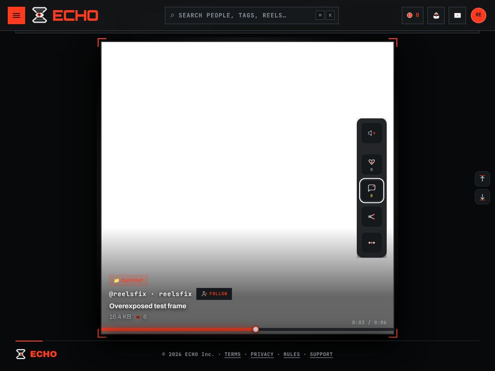
After: comments closed with Esc. Focus is back on the Comments button, and the rail buttons are 44px.
The PREV and NEXT page-edge arrows (.edge-chevron in reels.html) went from 32×32 to 44×44, the same size as the rail buttons after fix 10. Measured in the browser:
Docked at 1280: the arrows sit in the 64px gutter with 10px to the video on one side and 10px to the side panel on the other. The docked fullscreen gutter is 48px, so they fit there too.
1024: they sit at the right page edge, clear of the frame.
768: they sit at the left edge, from x 10 to 54. The frame starts at x 65.
On phones they stay hidden, as before, because phones navigate by swiping.
Not done: a keyboard path into the 3D preview canvas.
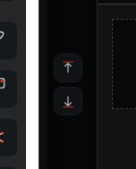
Before: 32px.
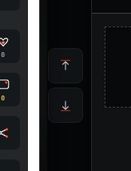
After: 44px, docked.
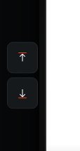
After: 768px, left edge.
MediumPreview is a control panel, not a preview
What
The page opens with four rows of 20+ toggles before any scene. Preview FOV defaults to 126° horizontal; Quest 3 is about 110°, so layouts look roomier than on device.
Fix
Put the scene first with a compact toolbar; move the rest into a collapsible panel. Default the FOV preset to Quest 3.
/reels/immersive-preview at 1280×800. The scene starts below the fold.
Fix 11 · Attempted fix · verified locally (Playwright on /reels/immersive-preview at 1280×800, signed in, WebGL running)
web/src/pages/ImmersivePreviewPage.jsx: the scene now comes right after one compact toolbar. The toolbar holds view (3D scene / flat panels), scene (Reels / Earth), camera (headset / orbit) and FOV, all as segmented controls, plus Reset view and Fullscreen. Everything else moved into a closed native <details> ("More controls"), reusing the existing .sx-expander style: curvature, shell pages, share/reward, the stereo, reduced-motion and hi-fi toggles, layout tuning, draw stats, the shell hint and the "Preview scope" note. The FOV preset now defaults to Quest 3 (96° vertical) instead of Desktop 70°. At 1280×800 the canvas top moved from 700px to 393px, and the controls above it went from 30 to 17. Checked in the browser: Earth / Orbit / SQ curve each update the status pill, the panel opens and shows all 9 tuning sliders, and the page throws no errors.
Not done: at 1280px the toolbar still wraps to two rows (Reset view and Fullscreen drop to a second line). The large page hero is unchanged.
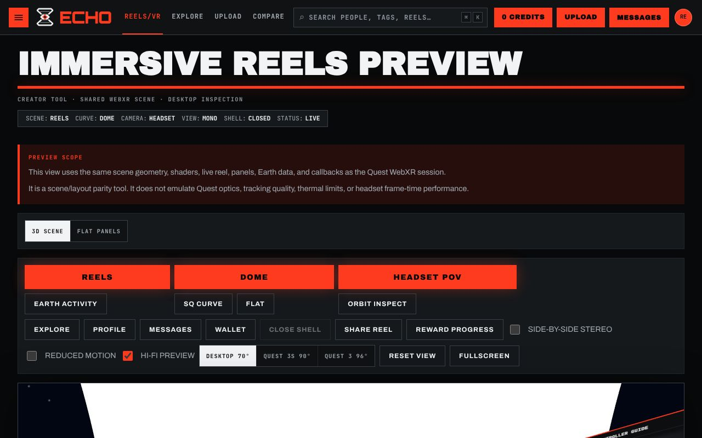
Before: the scene starts at y=700.
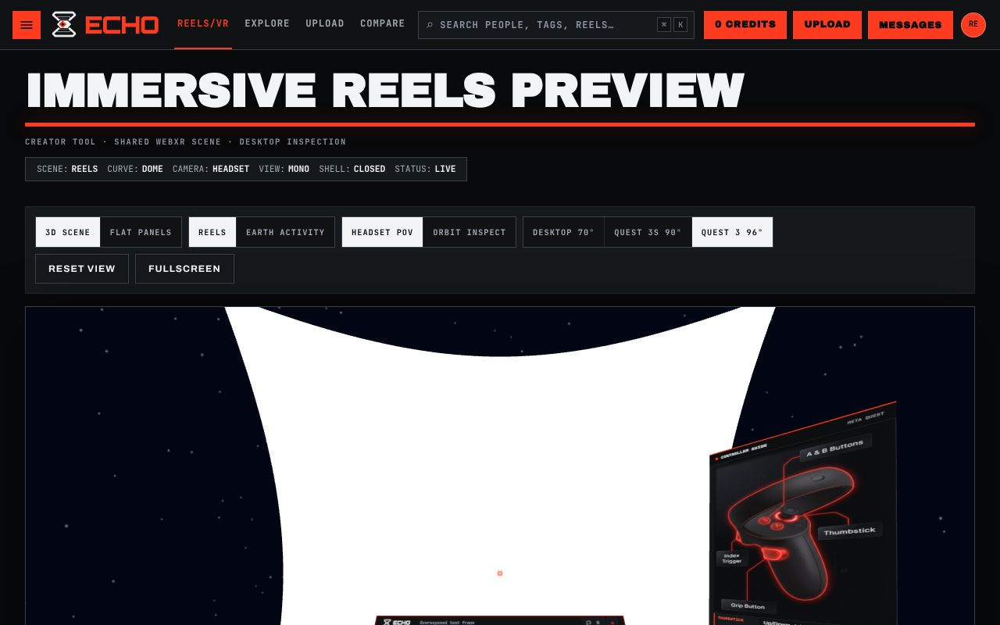
After: compact toolbar and the scene at y=393, with Quest 3 96° selected by default.
LowSmaller player issues
What
No captions or caption track.
Folder chips and raw filenames show as reel titles.
More-menu items are labelled only by title.
"SEND TO 0" is styled as a primary action while disabled in meaning.
Reduced motion does not stop autoplay.
Fix 12 · Attempted fix · verified locally (Playwright on /reels at 1024×768 with reducedMotion "reduce" vs "no-preference", and the share dialog)
web/src/styles/global.css: "SEND TO 0" is now a plain outlined button (grey text, not-allowed cursor) while it is disabled. It gets the accent fill only once at least one person is selected. Measured background: rgb(255,59,31) before, transparent after. ui/assets/reels.html: with prefers-reduced-motion: reduce, loadVideo treats every load as autoplay:false, so reels and image dwell timers start paused and tap or Space plays them. This does not apply inside a WebXR session. Measured: with no preference the video was playing at 2.5s; with reduce it was paused at 0.00s, and Space started it.
Not done: captions / a caption track; titles derived from folder chips and filenames; visible labels for the More-menu items, which are still icon-only with title and aria-label. Under reduced motion there is also no on-screen play hint (the player has no visible play button). Because the immersive preview reuses this player, its reel also starts paused when the OS asks for reduced motion. Since done: a PLAY button in fix 46.
After: with nobody selected, "SEND TO 0" is an outlined grey button, not the primary.
Fix 46 · Follow-up fix · a PLAY button when reduced motion holds a reel, verified locally (/reels, reduced motion on and off)
Fix 12 made reels start paused when the system asks for reduced motion, but the 2D player has no play button of its own: playBtn is looked up but is not in the page. So a held reel looked like a frozen frame with nothing to press. Now, only while reduced motion is holding a reel, a static "▶ PLAY" button sits in the middle of the frame (.motion-play-btn in reels.html). It uses the same dark chip as the overlays and is 44px tall. It has no transition and no animation, a keyboard focus ring, and it is hidden as soon as the reel plays, whether by the button, a tap, Space, or an error.
Measured in the browser:
Reduced motion on: the reel loads paused at 0:00 and the button shows. One click plays it (1.5 s later the reel is at 1.51 s) and the button disappears.
Reduced motion off: the reel autoplays and no button shows.
Next reel: not seen live, because this local feed has one published reel. Every reel goes through the same loadVideo path, which sets the button for images and videos alike.
Not done: captions; titles derived from filenames; and visible labels in the More menu. The CSS deliberately hides the rail labels ("Icon-only buttons"), and the 9-item More panel has no room for labels on a phone, so that needs a design decision.
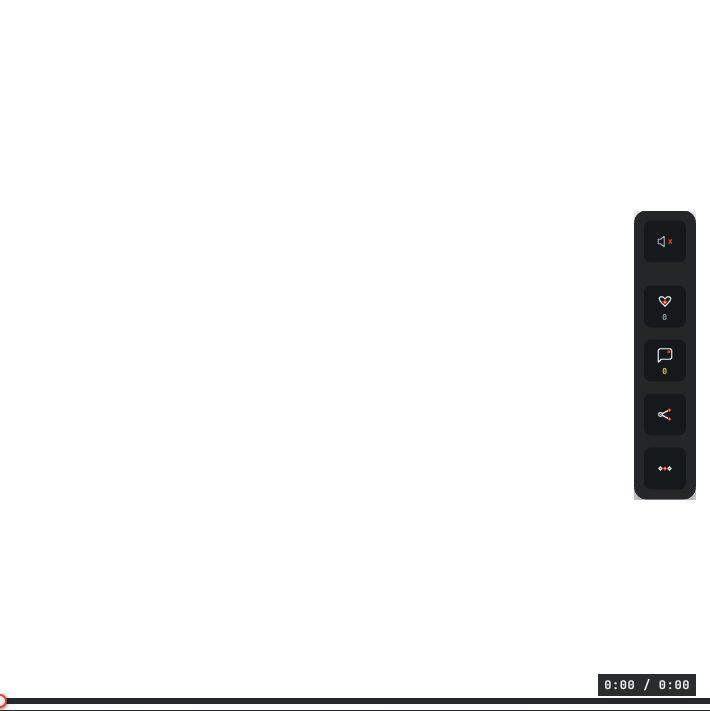
Before: held reel, nothing to press.
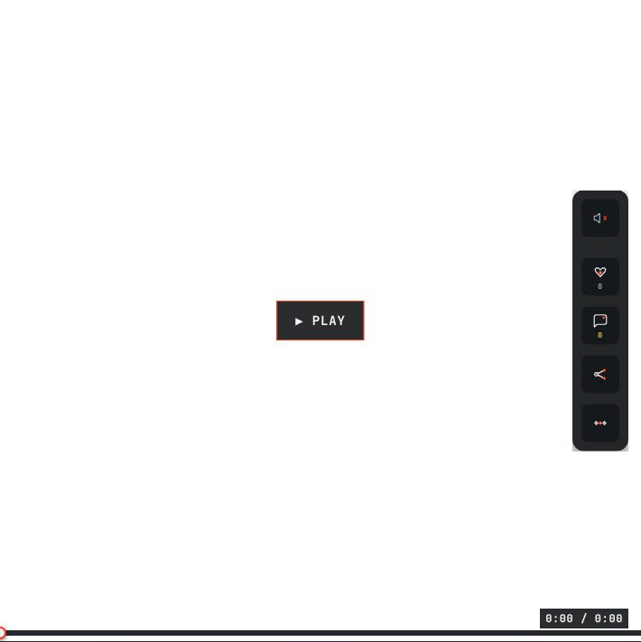
After: a static PLAY button.
Web UX and accessibilityReact app in web/src, tested at 1280 and 375 px.
HighExplore tile buttons are unreachable by keyboard
What
The whole tile has role="button" and handles Enter/Space by opening the reel. Key presses on the nested buttons bubble up, so they open the tile instead of acting.
Evidence
ExploreTile.jsx:180-190.
Fix
Make the tile a link on its title/thumbnail only, and keep nested buttons as siblings. At minimum check e.target === e.currentTarget in the handler.
Fix 2 · Attempted fix · verified locally on /explore
Applied the minimum fix from above, if (event.target !== event.currentTarget) return;, to the tile key handler in both ExploreTile.jsx and PackTile.jsx (the pack tile had the same bug). Before: Enter on a focused SHARE button navigated to the pack page. After: Enter opens the share dialog and the page stays on /explore. The larger change (tile as a link with sibling buttons) is not done.
After: Enter on SHARE opens the share dialog, no navigation.
HighMobile drawer and share dialog are not modal
What
Opening the drawer does not move focus, trap it, or make the page inert; the menu button has no aria-expanded. The share dialog has no focus trap or return.
Evidence
HeaderBar.jsx:352; ReelShareDialog.jsx.
Fix
Use one Dialog primitive (native <dialog> with showModal()) for drawer, share and report. ReportDialog already does this right and can be the base.
Fix 3 · Attempted fix · verified locally (share dialog at 1280px, drawer at 375px)
Share dialog (ReelShareDialog.jsx): Tab now wraps inside the dialog and focus returns to the SHARE button on close. Checked with 12 Tab presses (focus stayed in the dialog) and Escape (dialog closed, SHARE button focused again). Drawer (Sidebar.jsx), at 900px and below only: focus moves to the close button on open, Tab wraps inside the drawer (60 presses), and Escape returns focus to the menu button. Desktop keeps the non-modal push sidebar. Both copy the pattern already used in ReportDialog.jsx rather than adding a shared primitive.
Not done:aria-expanded on the menu button, inert on the page behind the drawer, and the shared native-dialog primitive. New finding: the floating MESSAGE button sits above the open drawer and covers its lower content (visible in the screenshot). Since done: aria-expanded, the inert page and the MESSAGE button over the drawer in fix 16.
After: drawer open at 375px, focus on the close button.
Follow-ups to the earlier drawer fix. aria-expanded: the header menu button now carries aria-expanded, using the drawer state passed in from AppShell.jsx (HeaderBar.jsx). It read false, then true after opening, then false after Escape. Launcher over the drawer: at 900px and below, while the drawer is open, the MESSAGE launcher and dock drop to just under the backdrop (global.css, a body:has(.sx-sidebar.sx-open) rule). The element at the launcher's position is now the drawer's own card. inert: while the overlay drawer is open, Sidebar.jsx sets inert on .sx-main, the footer, the launcher and the dock, and clears it on close. The header stays live because it sits above the backdrop and its menu button closes the drawer. Checked: the menu button still closes the drawer, and Escape returns focus to it with inert cleared.
Not done: the shared native-<dialog> primitive. The drawer in the screenshot still shows the engine-probe telemetry because this is the dev server (see the navigation finding).
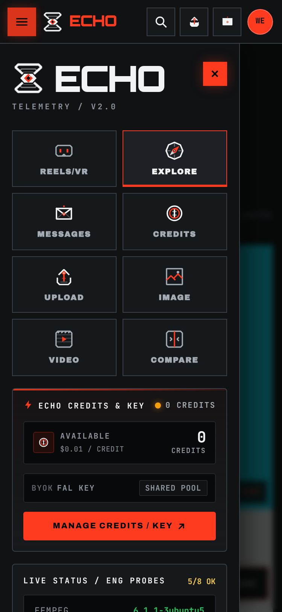
After: drawer at 375px. The MESSAGE launcher is behind the backdrop, not on top of the drawer.
LowLegal pages show template placeholders (deferred)
What
Terms and Privacy render [EFFECTIVE DATE], [COMPANY LEGAL NAME], [REGISTERED ADDRESS] and [SUPPORT EMAIL] to the public.
Evidence
LegalKit.jsx:8-18.
Status
Legal content will be handled later; not part of the beta UI work.
Fix
Fill the values before public launch, and fail the build if any [ALL CAPS] placeholder remains.
/terms. Placeholders are highlighted in yellow.
Fix 23 · Not attempted · deferred by product scope
Legal content is handled separately before public launch, as the finding's status says. LegalKit.jsx and the Terms and Privacy pages were not changed in this pass.
LowWallet offers purchase while credits are disabled
What
A red role="alert" banner says credits are disabled, but three BUY buttons sit right under it, and "MOST POPULAR" still glows. Users can't tell whether buying works.
Evidence
WalletPage.jsx:305.
Status
Credits will be enabled during beta, so BUY is correct there and the banner should not show. This applies only to environments with credits off.
Fix
When disabled, replace the tiers with one explanation: "Buying credits isn't available yet. You can still use free tools." Hide BUY buttons.
/wallet. Also visible: three filled red header buttons and mono uppercase at about 9px.
Fix 15 · Attempted fix · verified locally (/wallet signed in at 1280px, credits off)
When the catalog reports credits_enabled: false, WalletPage.jsx drops the three pack cards, the BUY buttons, "MOST POPULAR", the red role="alert" banner and the "INSTANT ALLOCATION AFTER PAYMENT" note. In their place it shows one line: "Buying credits isn't available yet. You can still use free tools." Nothing changes when credits are on (the beta setup). The page in this environment showed 0 BUY buttons. WalletPage.test.jsx: the credits-disabled test now checks for the explanation and for no Buy buttons or "MOST POPULAR" (deliberate test update). All 28 wallet tests pass.
Not done: the "STRIPE CHECKOUT IS DISABLED" banner, shown when credits are on but Stripe is off, is unchanged.
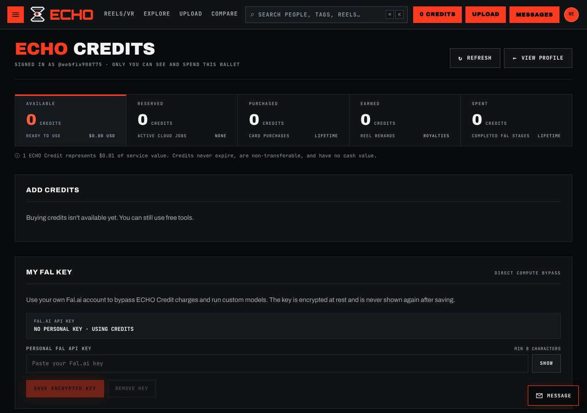
After: /wallet with credits off shows one explanation instead of pack cards with BUY buttons.
MediumDead ends and silent redirects
What
Unknown URLs redirect to /reels with no message (App.jsx:67). Not-found reels, packs and profiles have no way back. ErrorBoundary shows the raw error string.
Fix
Add a 404 page with search and a link home. Show a friendly ErrorBoundary message with a reload button; log the detail to Sentry instead.
Fix 14 · Attempted fix · verified locally (/no-such-page and /packs/does-not-exist at 1280px; ErrorBoundary by unit test)
Unknown URLs now render a 404 page instead of redirecting to /reels (App.jsx, new pages/NotFoundPage.jsx). The URL stays as typed, and the page says "PAGE NOT FOUND", shows the path, and offers GO TO REELS and SEARCH EXPLORE. EmptyState (primitives.jsx) takes optional action children, so unavailable packs and profiles now get a BACK TO EXPLORE link (PackPage.jsx, ProfilePage.jsx). ErrorBoundary.jsx no longer prints the raw error. It shows "This part of the page stopped working. Reloading usually fixes it." with a RELOAD PAGE button and role="alert". React 19 already logs caught errors to the console, so the detail is kept there. Sentry is not wired into the web app, so nothing is sent to Sentry. New ErrorBoundary.test.jsx checks that the message and button render and the raw error text does not.
Not done: the not-found reel case is inside the player, which this pass did not touch. The 404 page keeps the bare "ECHO" tab title. The ErrorBoundary was checked only by the unit test, not by forcing a crash in the running app. Since done: reel links in fix 37; the tab title and a live crash check in fix 41.
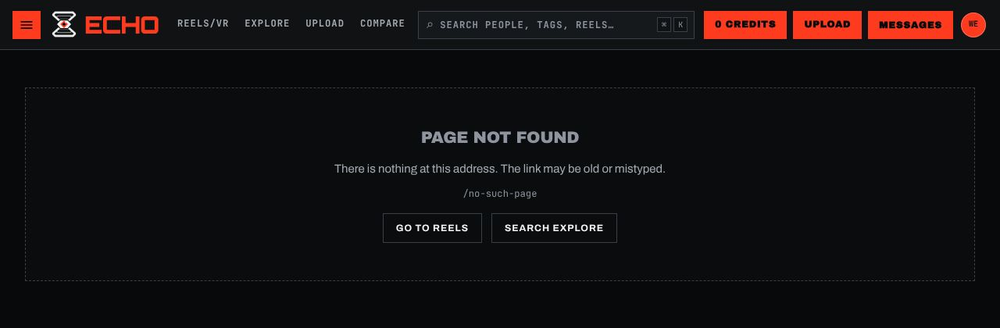
After: /no-such-page shows a 404 page with ways forward instead of redirecting without a message.
Fix 41 · Follow-up fix · 404 tab title, and the error screen checked in the running app
Tab title: the 404 page now reads "Page not found · ECHO" instead of the bare "ECHO". routeTitle in useDocumentTitle.js already names every route in App.jsx, so anything it does not recognise is now the catch-all page; only the root redirect keeps the bare brand. The title has to come from there, not from NotFoundPage: App's title effect runs after its child's, and once the page's code is cached it would overwrite the 404 page's own title. A new test (useDocumentTitle.test.js) failed before the change and passes after. Checked live: /no-such-page has the new title, and /explore still reads "Explore · ECHO".
Error screen, live: fix 14 checked the friendly ErrorBoundary only by unit test. To check it in the app, I had Playwright answer the Explore data request with a malformed body (videos is an object, not a list), which crashes the page while rendering. The boundary caught it inside the shell, so the header, footer and messaging stay usable. It shows the plain message and no raw error, while the TypeError still goes to the console. RELOAD PAGE reloaded /explore.
See the format-filter fix above for not-found reel links.
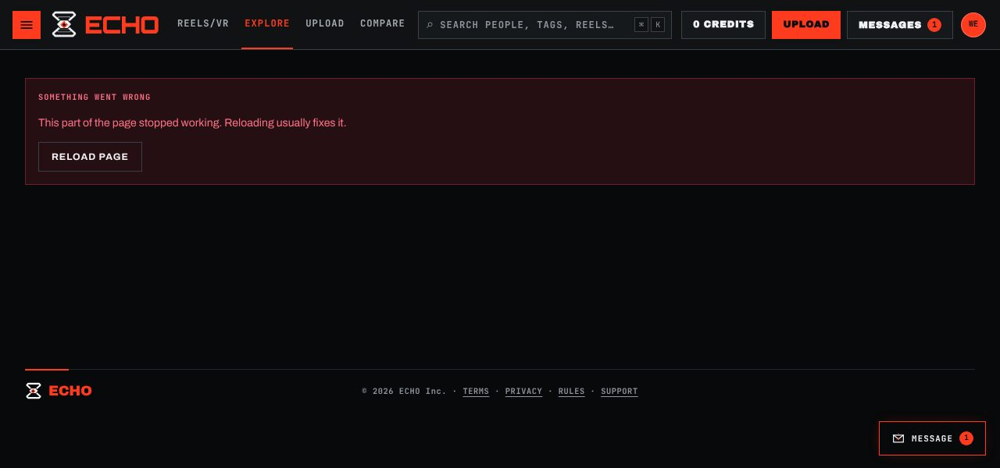
Live: a render crash on /explore from a malformed API response.
MediumForms don't explain themselves
What
Support and settings forms show errors far from the field and not linked with aria-describedby. Disabled buttons never say why they are disabled.
Fix
A FormField component with label, hint, inline error and aria-invalid. Next to a disabled button, show the missing requirement ("Add a title to publish").
Fix 19 · Attempted fix · verified locally (/settings/profile and /support at 1280px)
Settings (ProfileSettingsPage.jsx): when the server rejects a profile save with a field-specific error (display name, bio or website), the message now appears under that field. The input gets aria-invalid and an aria-describedby pointing at the message, and both clear on the next edit. Errors not tied to a field still show beside the button. Checked live: "not a site" in Website gives aria-invalid="true" and aria-describedby="ps-website-error". The disabled DELETE ACCOUNT button now explains itself: "Enter your password and type your username to delete." The hint is linked with aria-describedby and disappears once both fields are valid. Support (SupportPage.jsx): the inline errors already carried aria-invalid, and now each is also linked to its field with aria-describedby. New and extended tests are in ProfileSettingsPage.test.jsx and SupportPage.test.jsx.
Not done: no shared FormField component (kept surgical). Other disabled buttons, such as UPDATE PASSWORD and SAVE KEY, rely on their existing checklist and hints. Since done: fix 40.
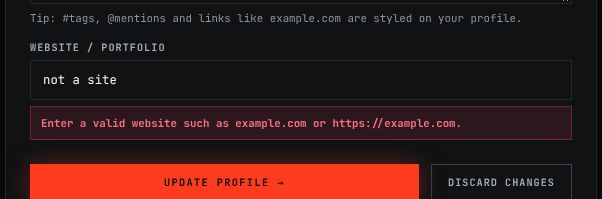
After: the website error sits under its field and is linked to it.
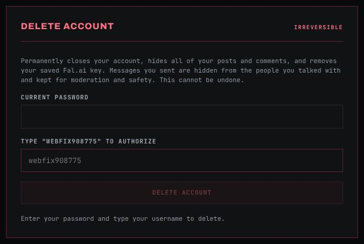
After: the disabled delete button says what is missing.
Fix 40 · Follow-up fix · the other disabled buttons, verified locally (/settings/profile) and by unit test
Fix 19 gave DELETE ACCOUNT a reason. Its two neighbours on the same page now use the same pattern: a one-line .sx-ps-hint under the button, linked with aria-describedby, shown only while the button is disabled (ProfileSettingsPage.jsx).
UPDATE PASSWORD names the first requirement that isn't met yet:
"Enter your current password to change it."
"Your new password needs 10–128 characters."
"Your new password must be different from the current one."
The checklist already covered the last two, but not the current-password requirement, which is why the button was disabled on load with nothing to say why.
SAVE KEY: "Paste a key of at least 8 characters to save it." The 8-character minimum was enforced but not stated anywhere on this page. The wallet page's key field already shows "MIN 8 CHARACTERS".
Two new tests in ProfileSettingsPage.test.jsx check each reason as the button's accessible description and check that it disappears once the button is enabled. All 21 tests in that file pass.
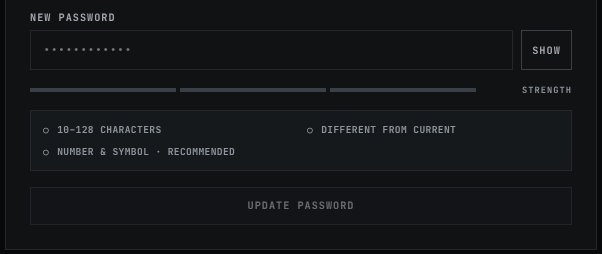
Before: disabled on load, no reason.
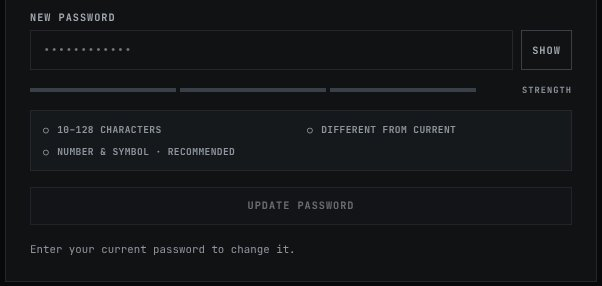
After.
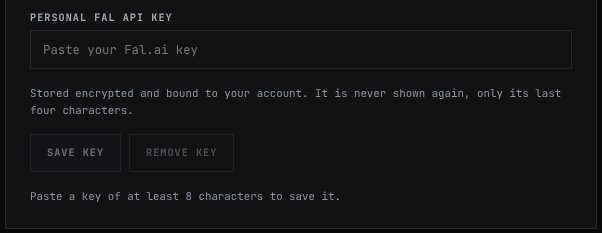
After: SAVE KEY.
MediumNavigation repeats and leaks developer data
What
The same links appear in header, drawer and sidebar with different labels.
Account menu items are buttons, so they can't be opened in a new tab.
The sidebar shows dev telemetry to users.
Location pages use the slug as the title.
Fix
One nav source used in all three places. Menu items that navigate become links. Gate telemetry behind a dev flag. Use the location display name.
Fix 18 · Attempted fix · verified locally (account menu and tab titles at 1280px; dev flag by unit test)
Dev telemetry:utils/devTools.js already had a flag (VITE_SX_HIDE_DEV_TOOLS), but it was off unless set, and no deploy config set it. Production builds (import.meta.env.PROD) now hide the probe card and telemetry bar by default. true or false still forces either way, and dev and tests are unchanged. The "TELEMETRY / V2.0" subtitle in Sidebar.jsx is now behind the same flag. devTools.test.js gained a production-default case, and the flag's row in RUNNING.md was updated. Location title:LocationExplorePage.jsx sets the tab title from the place name, and the route fallback in useDocumentTitle.js no longer uses the slug. /explore/location/tokyo--japan now reads "Tokyo, Japan · ECHO" (it was "tokyo--japan"). Account menu: PROFILE, SAVED, SETTINGS, CREDITS / FAL KEY and STAFF are now <Link>s with real hrefs, so they can be opened in a new tab. LOG OUT stays a button (HeaderBar.jsx, popover CSS widened to :is(a, button)).
Not done: one nav source shared by the header, drawer and sidebar. The header's CREDITS, UPLOAD and MESSAGES buttons still navigate with navigate(). Hiding the telemetry in production was checked by unit test, not in a production build. Since done: header links in fix 35, production build checked in fix 42.
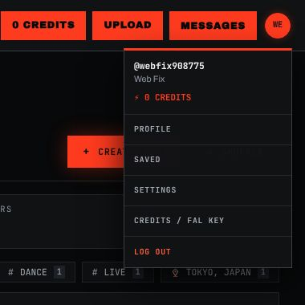
After: account menu items that navigate are links.
Fix 42 · Follow-up check · telemetry in a real production build
Fix 18 hid the developer telemetry in production builds but checked it only by unit test. I built the app with vite build, served it with vite preview against the same backend, and opened the sidebar signed in. In the production build the engine-probe card, the telemetry bar and the "TELEMETRY / V2.0" subtitle are all absent. The dev server, opened the same way, still shows all three.
See the header fix under "Danger and brand share one red" for the header actions, which are now links.
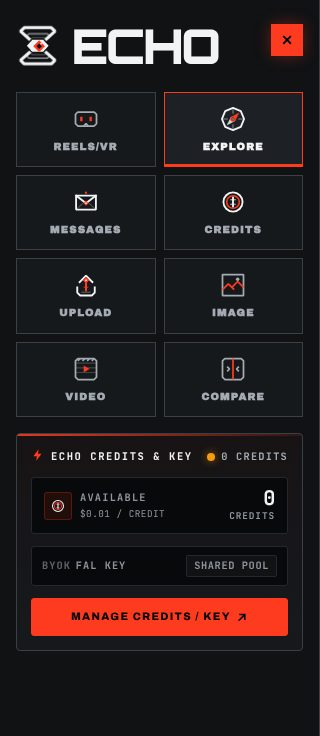
Production build: no probe card, telemetry bar or subtitle.
MediumFocus styles removed in places
What
14 rules set outline: none. Most have a replacement, but the pack tile's focus style matches its hover, so keyboard users can't tell focus from pointer.
Fix
A single :focus-visible ring token, not the accent colour on accent fills, and a lint rule against bare outline: none.
Fix 17 · Attempted fix · verified locally (/explore at 1280px, focus reached with Tab)
The .sx-pack-tile rule named in the finding, where focus looked the same as hover, is dead CSS: no component uses that class any more. Reel and pack tiles both render as .sx-explore-tile, and that tile only had the global 2px accent outline. On a red or white picture that outline almost disappears. Now .sx-explore-tile:focus-visible draws a ring inside the tile, over the media (global.css). It uses the existing --sx-focus-ring token plus one new token in tokens.css, --sx-focus-halo (a 3px light band inside the ring). Hover still only scales the picture, so keyboard focus and pointer hover now look different. It was drawn inside because tiles sit edge to edge, and an outer ring was hidden by the next tile.
Not done: the dead .sx-pack-tile rules are left in place (pre-existing dead code). The other 13 outline: none rules were not audited, and no lint rule was added. Since done: the audit in fix 38.
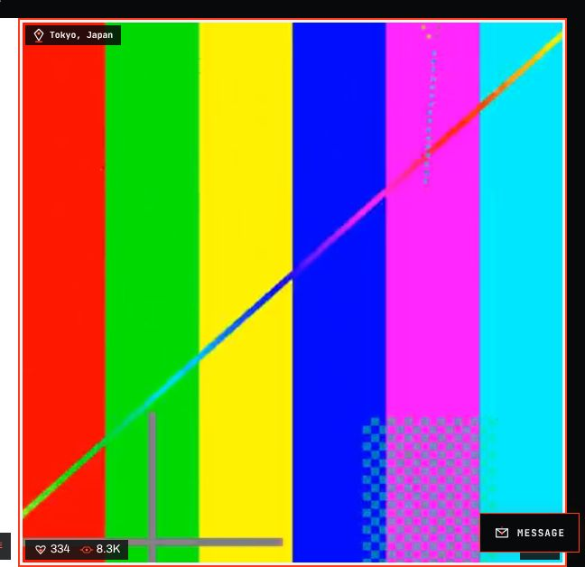
After: a keyboard-focused explore tile. The red ring with a white inner band stays visible over bright media.
Fix 38 · Follow-up fix · audit of the remaining outline: none rules, verified locally
I went through all 15 outline: none rules in global.css and checked what each element shows on keyboard focus instead:
Fine, 11 rules:
The standard :focus:not(:focus-visible) reset.
Two containers that only take programmatic focus (.sx-main, .sx-pk-dialog).
The Explore tile fixed in fix 17.
Range inputs (own :focus-visible outline).
The header search and message composer (accent border on :focus-within).
The message search, filter and GIF inputs, profile-settings inputs and selects, and auth fields (accent border or ring on focus).
The immersive preview canvas (inset ring).
Dead code, left alone: the .sx-pack-tile and .sx-pack-tile-actions rules, which nothing renders.
Two real gaps, both fixed:
Saved tabs on Profile. The shared rule set outline: none on .sx-profile-saved-tabs button.sx-active, so the selected tab, where keyboard focus lands in a tablist, showed nothing when focused (checked: :focus-visible true, no outline, no shadow).
OPEN PACK in messages. Its keyboard focus was identical to its hover.
Both now add the existing --sx-focus-halo (inset ink ring) from fix 17, the ring this app uses for focus on accent fills, where an accent outline would not show.
Checked by keyboard focus in the browser: the saved tab now reports a 3px inset rgb(242, 243, 245) ring. OPEN PACK only appears in a conversation that shares a pack, and there is none in this local database. I checked it with a probe element using the same class on /messages: hovered, it has an accent fill and no ring; keyboard-focused, an accent fill and the ring.
Not done: a lint rule against bare outline: none, and deleting the dead pack-tile CSS.
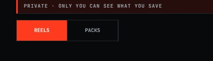
Before: REELS has keyboard focus but looks unfocused.After: inset ring on the focused selected tab.After: hover (left) versus keyboard focus (right), using a probe element on /messages.
LowMobile Explore is mostly chrome
What
At 375px the first screen shows stats, filters and codec chips; no reel thumbnail is visible until the second screen.
Fix
Lead with the grid on mobile. Collapse stats and filters into one "Filter" sheet.
/explore at 375px. No media above the fold.
Fix 20 · Attempted fix · verified locally (/explore at 375px and 1280px)
At 600px and below, the stats, trending tags, content tabs and filters on Explore sit behind a FILTER toggle next to CREATE PACK and SHUFFLE (ExplorePage.jsx, plus two small CSS rules in global.css). The toggle uses aria-expanded and aria-controls. Above 600px the toggle is hidden and the page is unchanged (checked at 1280px). At 375px the first reel tile now starts at about 325px down the page. Before, no media appeared on the first screen.
Not done: the "No Reel Packs match this filter yet" line still sits above the grid on the ALL tab, and the large EXPLORE heading is unchanged. The toggle is an inline collapse rather than a bottom sheet. Since done: the line is removed in fix 43.
Before: no media on the first screen.After: the grid leads, and the filters are one tap away.After: FILTER opened.
Fix 43 · Follow-up fix · the leftover line above the grid, verified locally (375px and 1280px)
"No Reel Packs match this filter yet — try another search or publish a collection." is removed from ExplorePage.jsx. It could only ever show on the ALL tab while reels were listed: on the PACKS tab with no packs, the page already shows its full empty state instead. Its information is already in the tab label, "PACKS (0)". On a phone it took two lines between the FILTER toggle and the first tile, and at 1280px it took one line above the grid on every visit. Screen readers also heard it as a status message on every load.
Before.After: the grid starts right under FILTER.
LowSmaller web issues
What
Login text at 9.75–10.2px; avatar initials at 3.56:1 contrast.
Icon buttons at 38px.
/rules and /verify-email have no page title.
Layout gaps at 375px; skeletons have no aria-busy; share has no live region.
Fix 21 · Attempted fix · verified locally (tab titles and avatar colours read from the running app; tests)
Page titles: /rules now reads "Community rules · ECHO" and /verify-email reads "Verify email · ECHO" (useDocumentTitle.js). aria-busy: the skeleton presets in Skeleton.jsx already had it. The remaining gap was explore and pack tiles that show the shimmer while their media loads, which now set aria-busy until ready (ExploreTile.jsx, PackTile.jsx). Live region: the profile SHARE button changes its label to "LINK COPIED", which screen readers did not announce. A visually hidden aria-live="polite" span now announces it (ProfilePage.jsx). The share dialog is owned by another pass. Avatar contrast: every avatar measured in the app already used dark initials, at 5.6:1 on the default #ff3b1f. The exception was the phone fullscreen tab bar avatar (.sx-bottom-nav-avatar), which used white initials at 3.56:1 and now uses #08090a at 5.6:1 (global.css).
Not done: the 36–38px icon buttons. Their sizes are hard-coded per class rather than taken from --sx-control-h, so no single token change can raise them cleanly. Also not done: login text sizes and the layout gaps at 375px. The tab-bar avatar change was not screenshotted because it only shows in the phone fullscreen player. Since done: sign-in text sizes in fix 45.
Fix 45 · Follow-up fix · sign-in and sign-up text sizes, verified locally (/login, /signup, /forgot-password at 1280px and 375px)
The auth screens set 20 sizes between 8.7px and 11.7px (0.58–0.78rem on a 15px root). Field labels were 9.75px, tabs and links 9.9px, and the SHOW toggle 9px. All of them are in the auth page's own .sx-au-* rules, so I raised them there without waiting for the app-wide type scale:
12px for the uppercase mono labels: field labels, tabs, links, SHOW, the checklist, the strength meter, step labels and the "optional" tag.
13px for the mono sentences: hints, error and notice messages, the consent line, the footer line, and the submit label.
A script that lists every visible text element under 12px finds none on /login, /signup or /forgot-password. Nothing wraps or overflows at 375px. Body copy and inputs were already 12–16px and are unchanged.
Not done: icon buttons are still 36–38px, and the layout gaps at 375px are unchanged. The 12/13px floors are local to these screens and will need to fit whichever app-wide type scale is chosen.
Before: labels 9.75px, SHOW 9px.After: 12px labels, 13px sentences.
Before, 375px.After, 375px.
Copy rewritesName things the way users think of them, in sentence case.
/upload. Four status labels say "awaiting source" in different words.
Today
Suggested
Where
PIPELINE: AWAITING SOURCE
Add a video or images to start
UploadPage.jsx:848
DROP SOURCE FILES OR CLICK TO BROWSE
Drop a video or up to 10 images, or browse
Upload
HEVC 4K (RAW MASTER) / H264 (BROWSER/VR)
Best quality / Plays everywhere
Explore filters
ECHO CREDITS ARE DISABLED IN THIS ENVIRONMENT
Buying credits isn't available yet
WalletPage.jsx:305
TERMINATE PROFILE & PURGE DATA
Delete account
Settings
No comments yet. Be the first to drop one below!
No comments yet
Comments
REELS AND AUTHORED REEL PACKS
Reels and packs from creators
Explore
CODEC: HEVC
(remove; not a user concern)
Explore stats
This browser cannot decode HEVC
This reel is no longer available (on 404)
reels.html:5867
Fix 5 · Attempted fix · verified locally (/upload and /explore at 1280px)
Changed three strings: the upload drop zone now reads "DROP A VIDEO OR IMAGES, OR CLICK TO BROWSE" (UploadZone.jsx), the Explore kicker reads "ECHO · REELS AND REEL PACKS" (ExplorePage.jsx), and the empty comments line ends "Start the conversation below." (reels.html). All 481 unit tests still pass.
Not done, on purpose: the strings are kept in uppercase mono because that is the app's current label style (see the design-system findings), so the sentence-case suggestions wait for that decision. "TERMINATE PROFILE" and "AWAITING SOURCE" are asserted by existing tests and need a deliberate test update. The wallet and credits copy is skipped because credits are enabled in beta. The HEVC error message needs the HEAD check described under the player error finding. The comments empty state is not shown in a screenshot because it only appears on a reel with no comments. Since done: those strings in fixes 22 and 44, and the error message in fix 37.
After: /upload drop zone.After: /explore kicker.
Fix 22 · Attempted fix · verified locally (/upload, /explore and /settings/profile at 1280px)
Leftovers from the first copy pass, kept in the app's uppercase mono style as decided in fix 5. Settings: "TERMINATE PROFILE & PURGE DATA" becomes "DELETE ACCOUNT" (ProfileSettingsPage.jsx). Upload: with no file chosen, the studio banner reads "ADD A VIDEO OR IMAGES TO START" with no "PIPELINE:" prefix (stageGeometry.js, UploadPage.jsx). Once a file is chosen the "PIPELINE:" summary returns. Explore: the source chips read BEST QUALITY / PLAYS EVERYWHERE. Only the labels changed, so URLs and saved filter values still work. The "CODEC: HEVC" stat is removed (ExplorePage.jsx). Tests updated on purpose: stageGeometry.test.js (summary string) and ProfileSettingsPage.test.jsx (button name). The "ECHO CREDITS ARE DISABLED" row is handled by the wallet finding.
Not done: the other "awaiting source" strings on Upload, the step badge "AWAITING SOURCE" and "AWAITING SOURCE FILE…", which were not in this list. The third Explore chip still reads "ALL CODECS". The location page's own "HEVC MASTER / H264 / VR" chips are unchanged. Sentence case still waits for the type-system decision. Since done: fix 44 (awaiting source) and fix 37 (one format vocabulary).
After: /upload banner with no source.After: /explore filters and stats.
Fix 44 · Follow-up fix · the other "awaiting source" strings, verified locally (/upload, /video, /image)
Fix 22 changed the Upload banner. The rest of the "awaiting source" wording is now gone too, in the app's uppercase label style:
Upload, step badge: "AWAITING SOURCE" → "NO FILE YET".
Upload, "AWAITING SOURCE FILE…": removed. The note directly above it already says what to drop, and where.
Upload batch mode: "AWAITING SOURCE FILES…" → "DROP VIDEOS OR IMAGES ON THE STAGE TO START". The batch note never said how to add files.
Video and Image studios, step 2 before any file: "AWAITING SOURCE VIDEO INITIATION…" → "ADD A VIDEO IN STEP 1 TO SET UP THE RENDER", and the same for images.
Also, from "Tokens leak and layers fight": that step-2 placeholder had a pulsing accent dot, the "idle pulse on /video that implies work is happening". StudioLoading is used only for these idle "add a file" states (see the comment in Skeleton.jsx), so the dot is removed from the component, along with its two CSS rules, which nothing else used. The watermark stays, as that comment intends.
Before: /upload still said "awaiting source" twice.After.
Before: /video step 2, pulsing dot.After: says what to do; nothing pulses.
Design systemtokens.css (134 lines) and global.css (12,107 lines).
HighText is too small across the app
What
Root size is 15px. Text under 12px makes up 65–77% of Wallet, Video and Packs.
Evidence
global.css:642font-size: 15px.
Fix
16px root and a type scale of 12 / 14 / 16 / 20 / 28 / 40. 12px only for tabular metadata.
Fix 31 · Not attempted · needs the type-scale decision (Phase 1)
As noted under fix 6, the 15px is on body only, so changing that one line would not move the 65–77% figure. The small text comes from individual rules: global.css has 39 rules at 0.75rem or below and 2 at 8–11px. Fixing it means adopting the 12 / 14 / 16 / 20 / 28 / 40 scale as tokens and moving those rules onto it, which touches most screens at once and should be reviewed as its own change with before/after captures per page.
HighDanger and brand share one red
What
--sx-accent: #ff3b1f and --sx-danger: #ef4444 are almost the same hue. Delete, Report and Buy look equally alarming. Screens carry 7–9 accent fills, with three filled buttons in the header.
Evidence
tokens.css:29, :47.
Fix
Keep orange-red for brand, use one primary fill per view, make danger a distinct crimson used only for destructive actions, and turn header Credits/Messages into ghost buttons.
Changed:--sx-danger is now rose #f43f5e (hover, dim and border variants follow) in tokens.css, and two hardcoded #ef4444 uses in global.css (offline dot, validation error text) now read the token. Rose on the dark surface is about 5:1, so it still passes for text. In the screenshot the Delete account panel reads pink-red, apart from the vermilion Update profile button and header buttons.
Not done: one primary fill per view and ghost Credits/Messages header buttons (a layout decision for you), and the 16px root. The 15px is set on body only, so raising it would not fix the real problem, which is the many rules under 12px; that needs the type scale, not one line.
Follow-up: this change left reels.html and VRUICanvas.TOKENS on the old #ef4444 / #f87171, so two token-parity tests failed. Both now use #f43f5e / #fb7185, and the parity tests pass.
After: danger (Delete account) versus accent (Update profile, header).
Fix 35 · Follow-up fix · header actions, verified locally (/explore at 1280px and 768px, signed in, one real unread message)
Decision (yours): UPLOAD stays the one filled action in the header; CREDITS and MESSAGES become outlined. The outline is the same treatment the tablet and phone header buttons already use (--sx-surface-2 fill, --sx-rule-strong border, ink text, accent border and text on hover), added as .sx-top-action-btn--ghost in global.css. The ghost hover drops the accent glow, as the tablet buttons do. Keyboard focus still gets the global accent ring.
On the outlined MESSAGES button the unread count is now an accent dot, the only accent on that button, matching the phone badge and the floating MESSAGE launcher. It used to be a black dot with an accent number. The text stays white, so its contrast is unchanged.
Also changed, from the navigation finding: all six header actions (CREDITS, UPLOAD and MESSAGES, at desktop and tablet/phone sizes) are now links (NavLink in HeaderBar.jsx) instead of buttons that called navigate(). They open in a new tab, and the current page's link reports aria-current="page" (checked on /wallet). Screen readers now hear the unread count: "Messages, 1 unread". Before, the phone button said only "Messages". The header tests pass.
Not changed: the filled hamburger button and the filled avatar circle are still accent. The header also offers UPLOAD twice, once as a nav link and once as the action button. Both are left for the "one nav source" change.
Before: three filled accent buttons.After: UPLOAD is the one filled action; the unread dot carries the accent.
HighMonospace uppercase everywhere
What
Mono is 65–77% and uppercase 41–63% of visible text. All-caps mono at 9–11px is the hardest text to read, and it removes hierarchy because everything looks like a label.
Fix
Mono only for numbers, codes and timestamps. Sentence case for buttons and body. Keep uppercase for short eyebrows only.
Fix 32 · Not attempted · brand decision first
Uppercase mono is the app's current label style (81 text-transform: uppercase rules in global.css), and the copy fixes in this pass deliberately kept it so the screens stay consistent. Switching buttons and body text to sentence case in the sans face is a visual-identity call; once it is made it can ship together with the type scale above.
HighNo form, loading or size contract
What
12 control heights exist although --sx-control-h: 38px is defined. There is no FormField, no shared loading state, no aria-busy. Three button families (.sx-btn, .sx-sidebar-btn-primary, .sx-pill) have different states.
Fix
Three sizes (32 / 40 / 48) and one Button with variant (primary, secondary, ghost, danger), size and loading.
Fix 33 · Not attempted · Phase 2 primitives
The Button / IconButton / FormField primitives in the table below are a new component layer that every page would migrate to. This pass only made local fixes on the screens with findings (inline errors with aria-describedby and disabled-reason text on the forms; see the forms finding), without adding the shared primitives.
MediumTokens leak and layers fight
What
78 hex and 97 rgba literals; 163 !important; 163 inline styles; no radius token.
z-index tokens say drawer 45, but global.css:1937 falls back to 2000.
9 infinite animations, including an idle pulse on /video that implies work is happening.
12 icon stroke widths; neon glow shadows on many controls.
tokens.py is a hand-kept subset of tokens.css.
Fix
Stylelint rules for literals and !important, a single z-index scale, generate tokens.py from CSS, stop infinite animations unless something is running.
Primitive
Replaces
Must handle
Button
.sx-btn, .sx-pill, sidebar primary
variant, size, loading, disabled reason
IconButton
38px ad-hoc icons
44px target, required label
FormField
per-page labels and errors
hint, inline error, aria-invalid
Dialog
drawer, share, report
focus trap, return, inert
Tabs, Chip
filter rows
roving focus, selected state
Toast
banners and alerts
live region, timeout
EmptyState
3 empty-state styles
title, hint, one action
Fix 34 · Not attempted · Phase 0 guardrails and Phase 1 codemod
Still true at this commit: 163 !important in global.css. Replacing literals, unifying z-index and generating tokens.py are mechanical but large; they need the stylelint rules in place first so the count can only go down. The only token added in this pass is --sx-focus-halo, next to the existing --sx-focus-ring (see the focus-styles fix).
Phased planEach phase ships on its own and leaves the app working.
Search combobox, skip link, tablist and breadcrumb semantics.
VR
Controller guide: clear diagram and mapping table.
Stereo video and dome curvature render cleanly on device.
Laser pointer with a visible hit dot.
Not tested
Real screen readers (VoiceOver, TalkBack), real touch devices, hand tracking on device, uploads and purchases end to end, and the moderation queue. Contrast and size figures come from computed styles in Chromium; VR angles come from scene geometry read over CDP.
Still openAfter fix 46. Each item says why it is not done.
Needs your decision
Labels in the player's More menu. The rail is icon-only on purpose (CSS comment "Icon-only buttons"). The 9-item More panel cannot fit labels on a phone. The options are labels on desktop only, or a labelled list popover instead of the icon stack (fix 46).
The rest of the header. The hamburger and avatar are still accent-filled, and UPLOAD appears twice, as a nav link and as the action (fix 35).
Type and label style. Choosing a type scale, and sentence case versus uppercase mono, unblocks most of the remaining small-text items (fix 31, 32). The sign-in screens use a local 12/13px floor until then (fix 45).
Needs the headset
UI depth and the head-locked 89° screen (fix 29, 30). Proposed changes are written up but not made.
A check on device of fixes 24–28, including flashes after hand tracking was requested (fix 27).
Larger pieces of work
The shared Dialog, Button, IconButton and FormField primitives (Phase 2). These would also bring the header icon buttons from 36–38px to 44px.
Captions or a caption track for reels, and titles that do not come from file names.
One navigation source for the header, drawer and sidebar.
A keyboard path into the 3D preview canvas.
Stylelint guardrails and the token codemod (fix 34).


![Terms of Service page showing highlighted placeholders such as [EFFECTIVE DATE], [COMPANY LEGAL NAME] and [SUPPORT EMAIL].](img/web_terms.jpg)